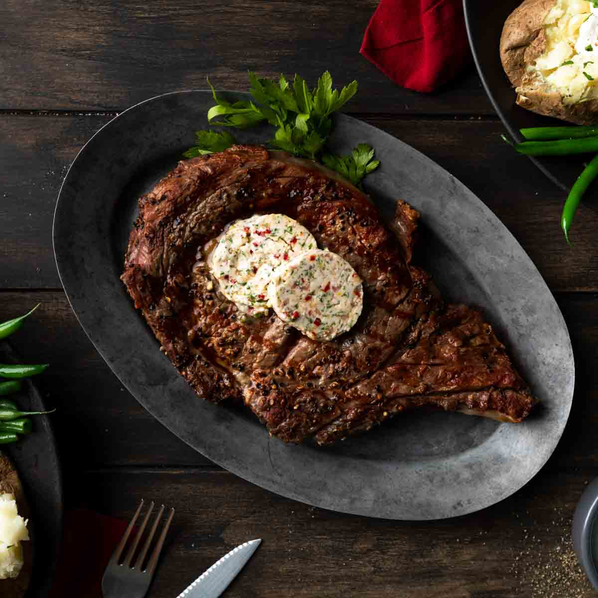

Ribeye Steak

My Personal Favorite: The Ribeye aka The Carnivor's Dream
For centuries, mankind has been craving this dish. The first
fire by cavemen probably featured some primitive iteration.
Now, we use advanced tactics like reverse searing, su vois,
etc. However, the goal remains the same: to cook the meat to
delcious perfection.
The Recipe:
- 12-16 0z. of Grass-Fed Ribeye
- Grass-Fed European Butter
- Salt and Pepper
- Garlic
- Rosemary
- Olive Oil
How to Cook:
- Prepare your Steak with Olive Oil, Salt and Pepper
- Preheat oven to 400 Degrees
- Cook Each Side for 3 Minutes in Cast Iron
- Place it in the Oven for 4 Minutes
- While in Oven, Sautee Garlic and Rosemary
- Pour Sauce Over the Steak and Let Rest for 5 Minutes
- That's It!
HOME PAGE